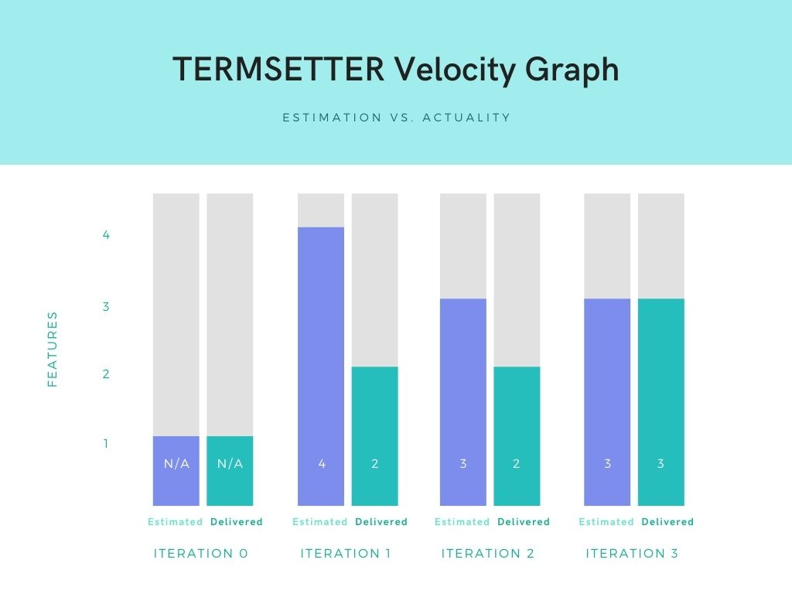

A tool that allows you to explore offered courses and enhanced the registration process.
See on GitHubBrowse the courses offered from four different departments (Accounting, Actuarial Study, Computer Science, and Mathematics) and get in the classes of your choice. Course selection and navigation is made more convenient by TermSetter!
TermSetter will organize your courses and provide summaries to make you keep on track! Have your transcript by your fingertips, it had never been this easy
TermSetter is user-friendly. No zoom ins, no accidentally pressing wrong rows of text, no getting kicked out. Just pure enrollment.
TermSetter is an app by students and for students. We love us a tech that will make our lives easier and enrollments less stressful.
Yes! TermSetter is open source. Whether you are a developer, a designer, or anything in between and outside, you are welcome to share ideas and contribute on how to make TermSetter better.
Clone the source code from our GitHub
Open the source code with Android Studio (i.e. Open an Existing Project)
Run the app (or press Shift + F10) after Gradle sync is completed
Feel free to create an account, browse and enroll in courses offered in Winter 2021!
What took the most time? The least? Any surprises?
Kevin: Setting up HSQLDB took us the most time. Making a presentation video took the least time (and surprisingly my voice sounds very different from I hear)
Andrea: Working with Enrollment took me by surprise. I thought it would be one of the shorter ones, assigning it an estimate of 2 days. It seems as simple enough as adding one SQL statement. I did not expect the depth of integration it will require: conflict logics, class limits, schema restructuring, dynamically generating sections, and passing all course and section information back and forth through seams. It ended up being the longest feature to implement - counting 10 days!
What did you learn about team or large project development? What will you start doing, keep doing, or stop doing next time?
Eriq: Two people looking up things on Stackoverflow is better than one! Honestly, working in a group of talented programmers and designers put me at ease. Trusting people you don't know is very hard and I feel that I have an entry level understanding of the development cycle and how a team must work together to make the vision statement a reality. In the future, I plan to communicate with my team more and not ghost them entirely. It took a lot of communication and annoying my teammates with dumb questions to learn the many different ways you can do something. Everyday we relied on each others strengths to move us forward.
Can you draw any conclusions from what you've done?
Mika: Android Studio is the Tim Hortons of software consistency
Andrea: Diving headfirst to Android Studio(with its mediocre documentation) and learning the strings from scratch is not an easy feat. Our team took great risks implementing functionalities our way and meddling with unfamiliar libraries. Next time, we should remember that a sample project exists and that we should copy its existing patterns

As we progressed through iterations our estimates became better, partly due to the fact that they were more difficult to apply in the beginning. Features in later iterations were reliant on code established in earlier iterations so It became easier to measure how much we could get done between them.
Andrea
Integration SpecialistKevin
Project ManagerEriq
Database ArchitectMika
App DesignerFarjad
Quality TesterTuan
The Logic Guru